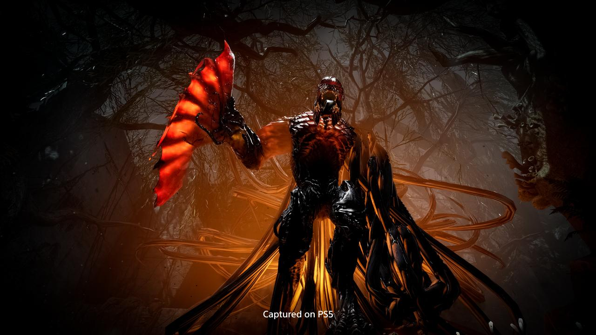
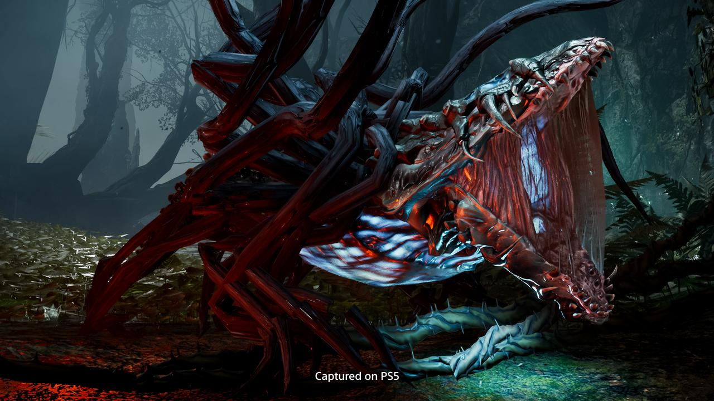
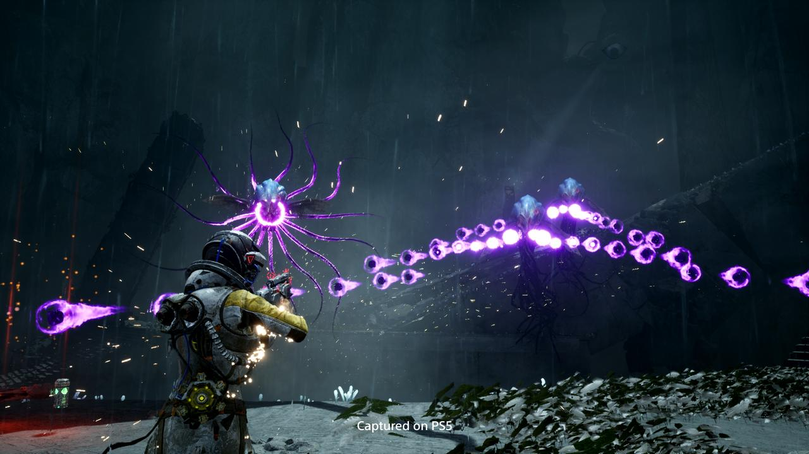
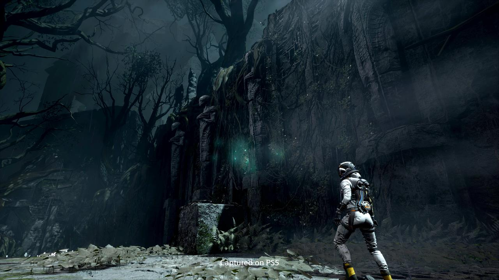
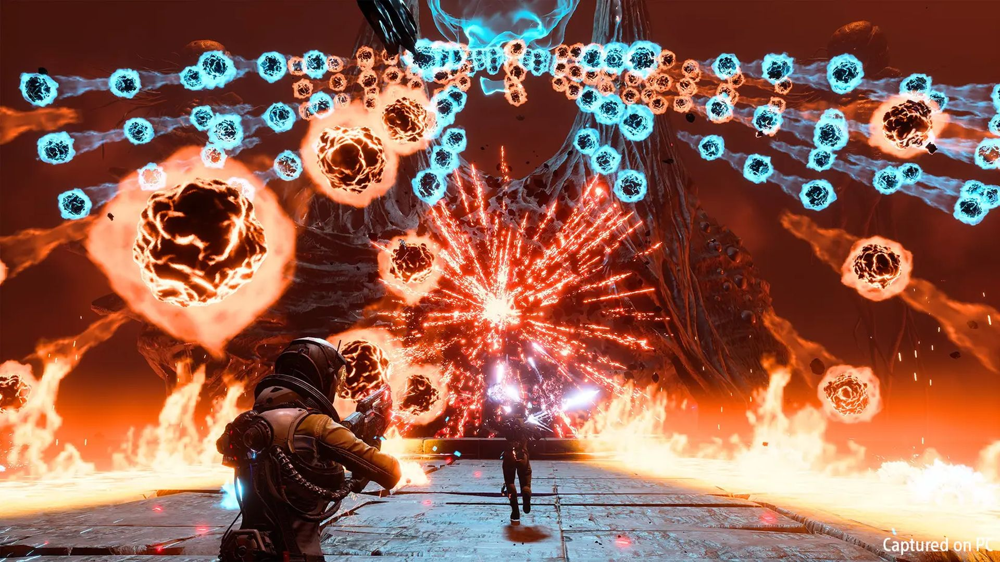

Vòng lặp sống chết vô tận
3535 commentReturnal – Không có nhiều game roguelike kết hợp nhuần nhuyễn lối chơi với cốt truyện như Returnal: nhân vật chính rơi vào một hành tinh lạ, bị cuốn vào vòng lặp vô tận giữa sống và chết, cách duy nhất thoát khỏi là khám phá bí mật ẩn giấu bên trong.
Sự trỗi dậy của dạng game “roguelike” (biến thể của game nhập vai, thường có các đặc tính: chết là mất nhân vật, vật phẩm, màn chơi thay đổi, đánh nhau khó nhằn và các yếu tố “hành hạ” người chơi dù đã về nơi an toàn – NV) trong thời gian gần đây đã tiếp thêm động lực cho Housemarque, studio đóng trụ sở tại Helsinki, Phần Lan, cho ra mắt tựa Returnal độc quyền trên Playstation 5, với chất lượng được đầu tư kĩ lưỡng! Housemarque vốn nổi tiếng với những game dạng “bullet-hell” (một dạng game “xả đạn” tứ phía mọi lúc, mọi nơi) như Nex Machina, Matterfall, nên Returnal lần này cũng không phải là ngoại lệ, bạn sẽ được “tắm” trong cơn mưa đạn đủ màu sắc xả ra từ kẻ thù! Bullet-hell và Roguelike, hai từ này đủ khiến người chơi mường tượng được trước cách chơi của Returnal: nhảy như thỏ, lạng lách như lươn và cực kì kiên nhẫn với sự “hành hạ”, với tinh thần sẵn sàng học hỏi cho mỗi thất bại!
Đồ họa và âm thanh: Quá chất lượng
Khác với những tựa trước của Housemarque, đồ họa và âm thanh của Returnal vô cùng chất! Mỗi màn chơi có tông màu cảnh sắc riêng, tính năng dò tia (Ray-tracing) trong Returnal tận dụng lợi thế khả năng đồ họa mạnh mẽ của PS5, ánh sáng phản chiếu từ các vũng nước trong game trở nên tự nhiên, gần như đời thực. Số khung hình trên giây (frame per second – fps) trong khi chơi Returnal trên PS5 đạt độ ổn định 60fps, nhờ vậy ta thấy chuyển động của Selene mượt mà, thanh thoát giữa làn mưa đạn của kẻ thù! Nếu kết hợp với tai nghe 3D, hoặc một dàn loa đủ xịn, phần âm thanh của Returnal sẽ khiến bạn ngất ngây, tiếng mưa rơi xung quanh, tiếng gầm rú của quái vật chân thật và sống động đủ để khiến người chơi lâu lâu… thót tim vì bị “con gì đó” tóm!
Returnal không những tận dụng tốt khả năng đồ họa và âm thanh của Playstation 5, mà còn khai thác khá triệt để điểm mạnh của tay cầm thế hệ mới Dualsense. Ngay từ ban đầu, người chơi cảm nhận rõ ràng tính năng Haptic Feedback của Dualsense, khi tàu của Selena bay qua đám thiên thạch, bay qua phía nào thì tay cầm rung phía đó, nhưng độ rung phù hợp với tình huống nhân vật trải qua. Cụ thể là nếu va chạm nhẹ bên trái, thì tay rung nhẹ phía đó, nếu va chạm mạnh, xé toạc thân tàu từ phải sang trái, thì tay cầm cũng rung mạnh từ phải sang trái. Sự kết hợp hài hòa giữa âm thanh 3D và tính năng Haptic Feedback này làm người viết nhớ đến cảm giác hồi coi phim trong rạp 4DX!
Gameplay thú vị, cốt truyện có chiều sâu
Không nhiều game biết cách kết hợp hài hòa giữa lối chơi và cốt truyện như Returnal. Đặc điểm của kiểu chơi roguelike là khi chết bạn sẽ phải quay lại điểm xuất phát, và mất gần như tất cả, súng, bình hồi máu, bom hay các phụ kiện nâng cấp giáp… Chỉ một vài món còn lại trong người bạn cùng kinh nghiệm “ăn hành” bạn đã trải qua. Quái vật trong game thì hung tợn, mạnh mẽ, vừa xả “mưa đạn”, vừa hùng hổ xông vào đòi “thịt” người chơi, vốn có vẻ hơi mỏng manh yếu đuối. Vì vậy người chơi phải luôn di chuyển, tận dụng địa hình hết mức có thể để bình máu không bị hụt quá nhiều trước khi đánh trùm, đôi khi đánh bọn lính lác còn khó hơn giết trùm (God of War (2018) là một điển hình!)
Game không có cấp bậc, nên bạn yên tâm quái trong Returnal không bao giờ trở nên “mỏng manh, yếu ớt” theo thời gian, kể cả những màn đầu! Và dường như điều đó chưa đủ để “hành hạ” người chơi, thì ngoài quái ra Returnal cũng rải rác vô số các tháp súng (turret) càng khiến cho chiến trường trở nên hỗn loạn hơn, có khi chúng còn trang bị lá chắn, mà chỉ có thể dùng kiếm cận chiến để phá!
Thứ hơn thua nhau qua những lần “chết đi, sống lại” chính là những kinh nghiệm, cách tận dụng những tài nguyên vĩnh viễn để vượt qua màn chơi an toàn nhất có thể! Returnal tận dụng triệt để tính năng Adaptive Triggers của Dualsense, ko chỉ làm việc giữ cò bắn súng trở nên thật hơn, mà còn để chuyển chức năng của súng. Nếu người chơi ấn hết lực nút nhắm L2, súng sẽ bắn chế độ đặc biệt, nhưng thông thường, cò L2 sẽ giữ ngón tay người chơi ở chế độ bình thường.
Súng trong Returnal khi hết băng đạn, sẽ cần thời gian để nạp lại, người chơi có thể rút ngắn quá trình nạp bằng cách chơi “mini game”, bấm đúng vùng, súng sẽ nạp lại đạn tức khắc (tương tự một số game như Gears 5, Hard West) Ngoài hướng dẫn điều khiển ra, Returnal còn giấu rất nhiều điều về lối chơi, bắt người chơi phải tự khám phá qua những lần “chết đi, sống lại”. Đây cũng chính là điểm kết hợp hài hòa giữa lối chơi và cốt truyện trong Returnal: bạn lạc vào một hành tinh lạ, bị cuốn vào chu kỳ “chết đi sống lại” gần như mãi mãi không chấm dứt, cách duy nhất để thoát khỏi là rút kinh nghiệm từ thất bại, khám phá cho được cái bí ẩn của hành tinh này. Ngay cả khi người chơi tưởng mình đã khám phá được bí mật của hành tinh này, thì lại có bí mật khác làm đảo lộn hết sự phát hiện của bạn lúc đầu, và không những chỉ một lần, Returnal còn “chơi khăm” người chơi tận hai lần!
Những điểm trừ
Nếu bạn là người chơi thích game có độ khó vừa phải, Returnal không phải là game dành cho bạn, cũng như nhiều game roguelike khác, trò chơi thử thách sự tập trung kiên nhẫn của người chơi, “sai một ly, đi một dặm”. Nếu bạn không tìm thấy nút lưu game (save), không phải do game bị lỗi, mà nó được thiết kế như thế! Nếu bạn chết ở bất cứ màn nào trong một phần cốt truyện, hay bạn thoát hẳn game, bạn sẽ… quay trở lại vị trí xuất phát ở màn đầu!
Đương nhiên, trùm ở mỗi màn chết sẽ không sống lại, một số tài nguyên hay thiết bị vĩnh viễn được giữ lại, nhưng bạn sẽ phải leo lại từ màn đầu! Cách duy nhất để giữ quá trình chơi là ấn Pause, tắt máy bằng chế độ “Rest Mode” (chế độ tạm nghỉ chứ không tắt máy hẳn).
Tuy nhiên, điều này rất bất tiện với những người không có thời gian, hay những vùng có hệ thống điện không ổn định, cũng như khả năng xảy ra những trục trặc máy móc, cháy nổ không lường trước. Điều này gây tranh cãi giữa cộng đồng người chơi, người mong Housemarque thêm chế độ lưu game vào Returnal, người phản đối vì thể loại game này vốn là như thế, và Housemarque cũng đã hứa sẽ xem xét vấn đề này.
Tổng Kết
Returnal là phát súng đầu tiên cho thế hệ game độc quyền tiếp theo của Playstation, chất lượng được đầu tư khác biệt hoàn toàn so với hai game trước đó sản xuất bởi Housemarque. Cốt truyện thú vị ẩn chứa nhiều bất ngờ khiến người chơi không ngờ tới, lối chơi mang tính thử thách của dạng rouge-like, âm thanh 3D cho cảm giác sống động và khai thác tốt các tính năng của tay cầm thế hệ mới Dualsense. Returnal thực sự xứng đáng là "quân tiên phong", mở ra thời kì mới cho thế hệ thứ 5 của Playstation.

topgamer June 21, 2024
Mới tải ngày hôm qua. Để chơi thử mấy hôm rồi review cho mọi người nghe
Replysuperstar_9xSeptember 11, 2023
Bản DLC của game này thì chuẩn lắm, không làm khó người chơi.
Reply